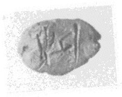
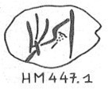

-
HTWa1022
Names
Aliases for the inscription.
HTWa1022, HT Wa 1022
Support
Type of Object.
Nodule
Location
Site where object was found.
Haghia Triada
Findspot
Location at Site.
Portico 11 and Room 13


# "Row Index", "Line Index", "Word Index", "Syllabogram", "Status of Reading"
# R L W I S
# 1 0 1 PA certain
1 1 0 I+*301 none
Scribe
Writer of Inscription.
HT Wa Scribe 55
Context
Approximate Date of Inscription.
Late Minoan IB
1500-1450 BCE
Dimensions
Height x Length x Thickness.
Catalogue
Museum Reference Number.
Readings
Linear A Transcription
A Linear A transcription with words parsed separately.
Line breaks match the inscription.
𐛁
ASCII Transcription
An ASCII transcription with words parsed separately.
Line breaks match the inscription.
I+*301
Linear A Tabulation
A Linear A transcription with words parsed separately.
Line breaks are logical, e.g. to represent a list.
𐛁
ASCII Tabulation
An ASCII transcription with words parsed separately.
Line breaks are logical, e.g. to represent a list.
I+*301
Commentary
HT Wa 1022
(HMs
447.1) (GORILA II: 8)
HT Wa Scribe 55
I+*301 {*520}
b: seal impression: AT 125 (=
CMS
II, 6 no.
11:
man in kilt &
man in robe walk left)
Commentary © John Younger
References
papers/GORILA-Vol2.pdf#page=70